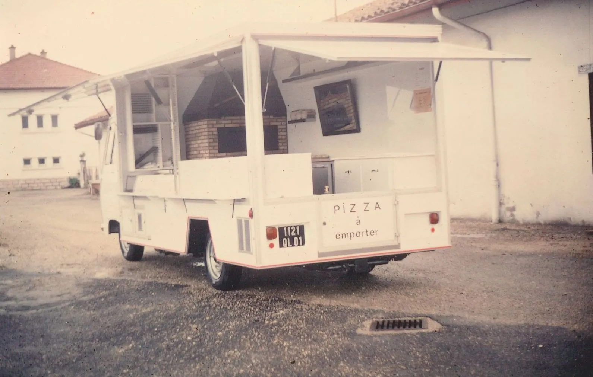
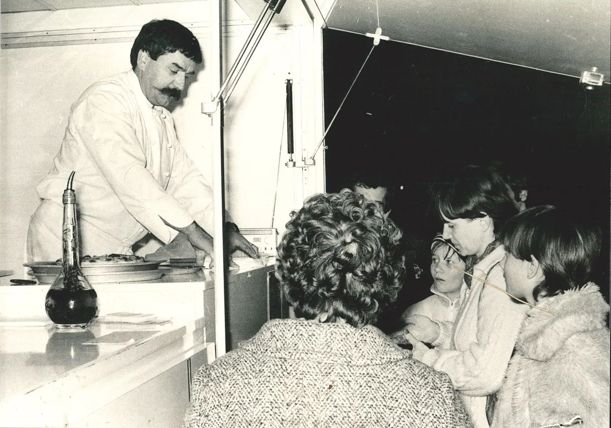
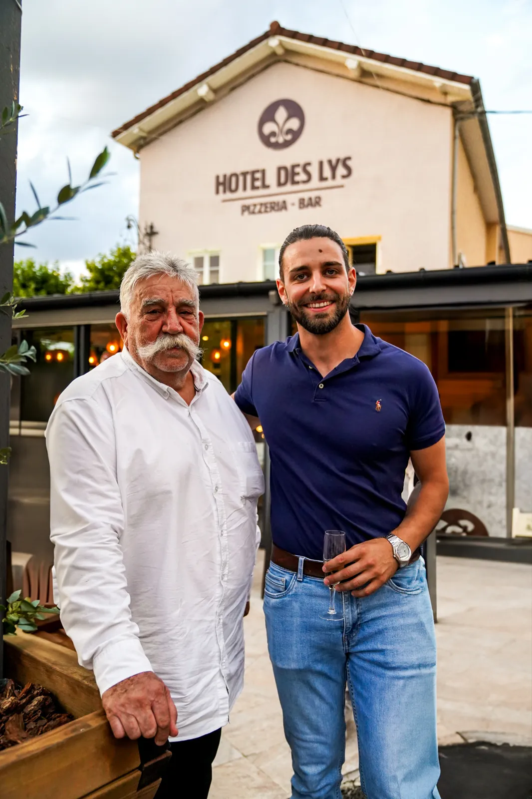
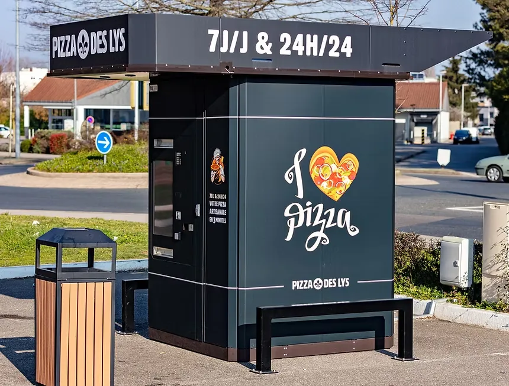

Accueil / Notre histoire
Une histoire de famille
Avant d’être une maison… c’était un camion. Et pas n’importe lequel.


Le grand-père
Pierre, le pionnier
Il ose un pari fou pour l’époque : lancer le premier camion à pizza de Bourg-en-Bresse, Pizza Home. Chaque soir, son four à bois fait danser les flammes et régale tout un quartier.
Le petit-fils
Pierre, la relève
Il a gardé en lui la pâte qui lève, la sauce qui mijote, les clients qui repartent le sourire aux lèvres. Avec son associé, il ouvre trois adresses, réunies sous le nom La Maison des Lys.

Nos distributeurs
Des pizzas 24 h/24
Préparées dans notre pizzeria, avec le même soin, puis placées dans nos distributeurs autour de Bourg-en-Bresse. Une interface simple : en quelques minutes, repartez avec une pizza chaude.
- 7 j/7, 24 h/24.
- Des classiques comme la Margherita ou la 4 fromages.
- Et nos créations originales.

Sur place · à emporter · 24 h/24